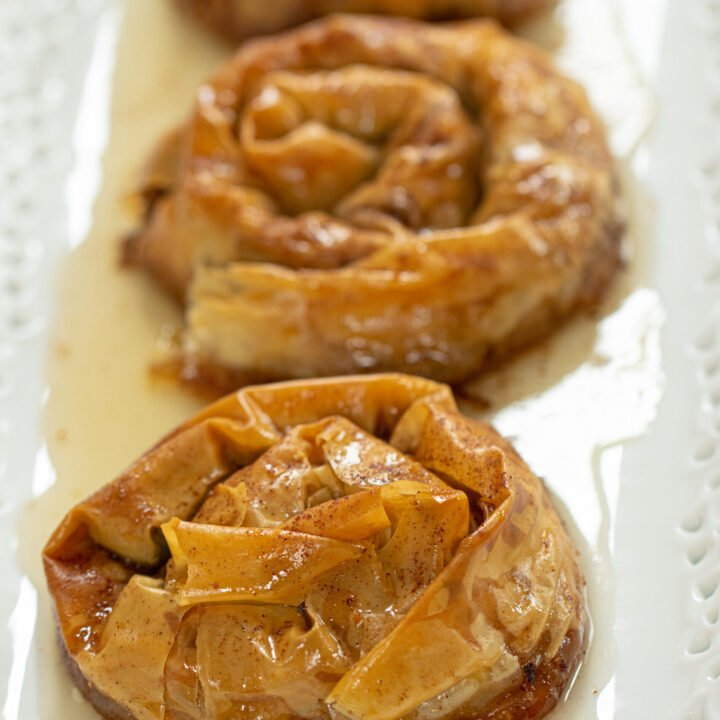

Baklava

Description
Baklavas are a middle eastern dessert that's pretty
simple but delicious. Normally they are acompanied
by coffee or tea.
They may seem difficult to make, but they
are far from it.
Ingredients
- Phillo pastry
- Butter
- Walnuts
- Sugar
- Water
- Ricotta cheese
Steps
- Melt butter on a pan.
- Carefully unroll the phillo pastry
on a work surface.
- Layer 4 sheets of phillo pastry on top of
each other placing melted butter between
each sheet.
- Place a generous amount of ricotta in a log
form in the middle of the phillo sheets.
- Place walnuts on top of the ricotta and
start rolling the phillo pastry into itself.
- Once you completely roll the phillo, grab a knife
and cut into 6 inch logs.
- Roll each log onto itself to make a spiral.
- Preheat the oven at 350*F
- Drizzle more butter on top of the baklavas and
some more walnuts.
- Place in the oven for 20 min.
- On a pot, place equal amounts of sugar and water.
- Bring the sugar/water mix to a boil.
- Once the baklavas are ready to go out from the oven,
drench them with the syrup.
Go Back